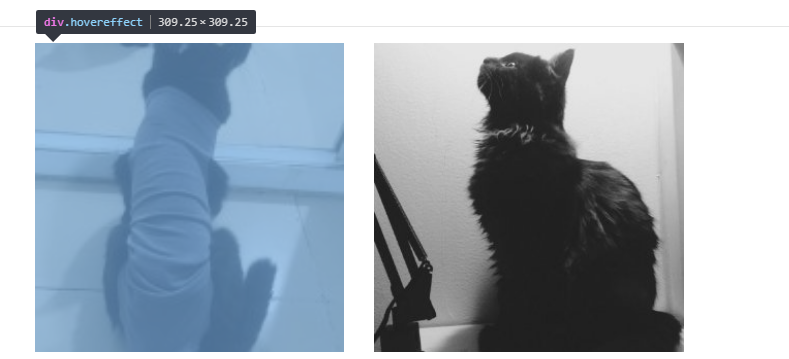

前端规范实践
本文用来记录一些在实践中使用的 W3C 规范，包括易混淆的、不符合常理的点。
margin 和 padding 的父容器依赖
注意：水平布局下不管是margin还是padding，依赖的都是父容器的width。垂直布局依赖height.
https://drafts.csswg.org/css-box/#flows
| Name: | padding |
|---|---|
| Percentages: | width* of containing block |
| Name: | margin |
|---|---|
| Percentages: | width* of containing block |
if the containing block is horizontal otherwise the height
Note that in a horizontal flow, percentages on margin-top and margin-bottom are relative to the width of the containing block, not the height (and in vertical flow, margin-left and margin-right are relative to the height, not the width).
纯 CSS 实现方形布局
使用 margin/padding-top:100%实现方形布局，可以实现正方形（固定比例）的容器，而无需设置子元素高度。下面的示例展示了图片内容为正方形，不依赖原图比例。也避免了图片未加载时高度塌陷的问题。
适用场景: 封面图。
- html
|
- css
|
效果

优点：灵活运用此属性，不依赖 js 和子元素固定高度。
未完待续…
把浮动的元素写在前面
如果一个 div 中既有 float 元素，又有非 float 元素，应该把 float 元素写在非 float 元素前面。
|
因为浏览器从前向后解析 html，非 float 元素占用了文档流。在解析到 float 元素时，浏览器会监测文档流，当浏览器认为一行剩余空间容纳不下 float 元素，此时会另起一行。所以如果不这么写，float 元素有可能被浏览器换行。把 float 写在最前面，float 元素不占用文档流，所以每次都在第一行分配 float 元素。